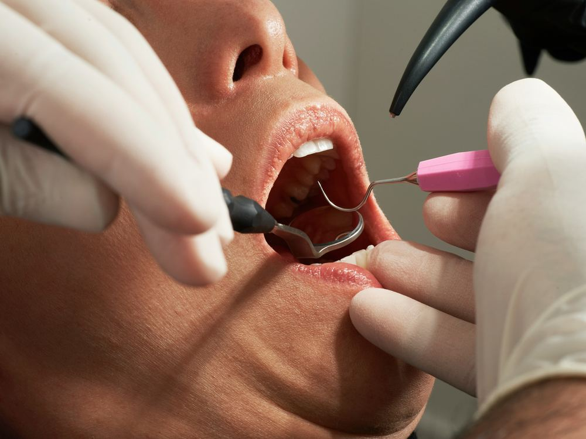
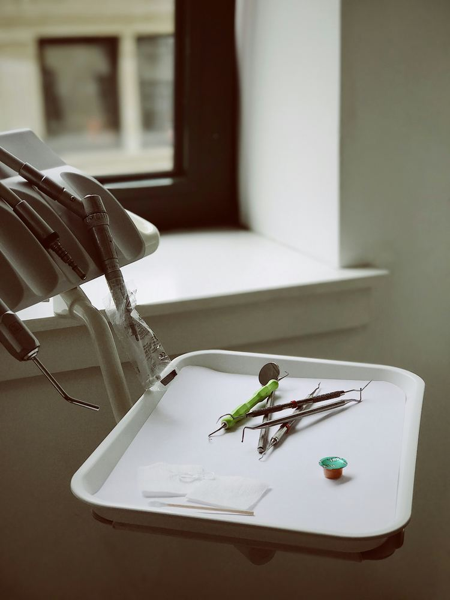
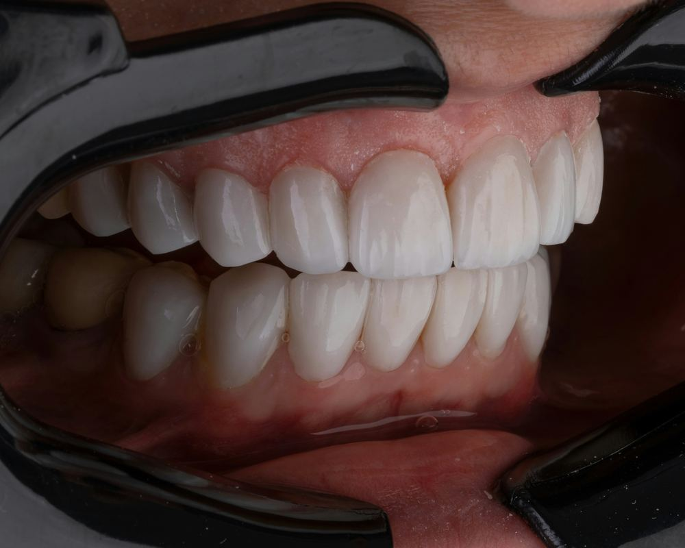

Servicios y Precios
Cuidado profesional de higiene dental, en nuestra oficina de Woodland Hills o directamente donde usted esté, con los precios incluidos abajo.
ⓘ Los precios están sujetos a cambio sin previo aviso
Cuidado Que Llega a Usted
Cada servicio de esta página también puede brindarse fuera de la oficina: a domicilio, en residencias asistidas o en centros de enfermería especializada, con el mismo estándar de cuidado.
Conozca más →
Evaluaciones y Exámenes de Salud Oral
Cada cita comienza con una evaluación integral de salud oral para evaluar su salud oral y sistémica en general. Su evaluación incluye:
- Un examen exhaustivo de detección de cáncer oral
- Una evaluación de su higiene oral y salud de las encías
- Examen de presión arterial (hipertensión)
- Una evaluación personalizada del riesgo de caries
- Fotografías intraorales y radiografías digitales cuando estén clínicamente indicadas
Estos exámenes ayudan a identificar posibles problemas a tiempo, permitiéndonos ofrecer recomendaciones personalizadas y cuidado preventivo adaptado a sus necesidades específicas de salud oral.

Profilaxis para Adultos (Limpieza Dental de Rutina)
El cepillado y el uso de hilo dental regular son esenciales para mantener la salud oral; sin embargo, es posible que no eliminen toda la placa y el sarro por encima de la línea de las encías. La profilaxis dental es un procedimiento de limpieza preventiva diseñado para eliminar estos depósitos, reducir el riesgo de inflamación de las encías y ayudar a mantener una sonrisa saludable.
La profilaxis se recomienda para pacientes con encías sanas y no es apropiada para personas con depósitos importantes por debajo de la línea de las encías, enfermedad periodontal activa o bolsas periodontales profundas. En estos casos, puede recomendarse un tipo diferente de terapia periodontal según sus necesidades específicas.
Para los pacientes que califican, las citas de profilaxis de rutina generalmente se recomiendan cada seis meses para ayudar a mantener una salud oral óptima.
Profilaxis Infantil (Limpieza Dental de Rutina)
La misma limpieza preventiva y delicada que la profilaxis para adultos anterior, adaptada en tamaño y ritmo para pacientes más jóvenes, ayudando a formar buenos hábitos desde temprano y a detectar problemas menores antes de que crezcan.
Raspado en Presencia de Gingivitis
El raspado en presencia de inflamación es una limpieza dental especializada diseñada para tratar de forma suave y eficaz la inflamación de las encías causada por la acumulación de placa y sarro. Este tratamiento requiere más tiempo y atención que una limpieza rutinaria debido a la mayor sensibilidad e inflamación de las encías. Nuestro objetivo es ayudar a restaurar sus encías a un estado más saludable y equilibrado, brindando una experiencia de cuidado cómoda y personalizada.
Raspado y Alisado Radicular (Limpieza Profunda)
Nuestro servicio de raspado y alisado radicular es un procedimiento especializado de limpieza profunda diseñado para eliminar placa, sarro y acumulación bacteriana por encima y por debajo de la línea de las encías. Este tratamiento periodontal esencial ayuda a reducir la inflamación, favorecer encías más saludables y crear un entorno más propicio para la sanación.
Al abordar las causas subyacentes de la enfermedad de las encías, el raspado y alisado radicular puede ayudar a restaurar la salud de las encías, mejorar su comodidad oral y apoyar la estabilidad a largo plazo de su sonrisa.
Mantenimiento Periodontal
El mantenimiento periodontal es una limpieza diseñada para pacientes con antecedentes de enfermedad periodontal que han completado el tratamiento, como el raspado y alisado radicular. Las visitas de mantenimiento regular ayudan a controlar las bacterias, reducir la inflamación y prevenir el avance de la enfermedad.
Para controlar eficazmente la salud periodontal, las citas de mantenimiento generalmente se recomiendan cada tres a cuatro meses según sus necesidades individuales y factores de riesgo.
Aplicación de Flúor
El flúor tópico es un tratamiento que se aplica a los dientes para ayudar a fortalecer el esmalte y prevenir caries. También ayuda con la sensibilidad dental. El flúor funciona remineralizando el esmalte e inhibiendo el metabolismo bacteriano, lo que reduce el crecimiento de la placa bacteriana. Este tratamiento se recomienda para pacientes con alto riesgo de caries, sensibilidad dental y recesión de encías.

Blanqueamiento Dental Profesional
Ilumine su sonrisa con una experiencia de blanqueamiento dental personalizada, diseñada en torno a su comodidad y sus objetivos. El blanqueamiento profesional puede ayudar a reducir la apariencia de manchas causadas por el café, el té, el vino, el tabaco y hábitos cotidianos, revelando una sonrisa renovada y más radiante.
Instrucción de Higiene Oral y Orientación Nutricional
Se brinda educación personalizada sobre higiene oral según las necesidades individuales, el estilo de vida y los objetivos de salud oral de cada paciente. Para los clientes concierge que reciben cuidado en casa, se ofrece orientación y apoyo a cuidadores y familiares para ayudar a mantener rutinas de cuidado oral constantes.
La orientación nutricional está disponible para pacientes con mayores factores de riesgo de caries y erosión del esmalte. A través de la educación y recomendaciones prácticas, se empodera a los pacientes para tomar decisiones informadas que apoyen dientes, encías y bienestar oral más saludables.
Recomendaciones de Productos
Ayuda para elegir el cepillo de dientes, hilo dental o pasta dental adecuados para sus necesidades.
Referencia a Dentistas Locales
El cuidado integral significa saber cuándo se necesita colaboración. Si sus necesidades de salud oral van más allá de los servicios de higiene, le brindaré orientación y referencias de confianza a dentistas locales que puedan continuar su cuidado. Estoy comprometida a apoyar su sonrisa en cada paso del camino.
Formas de Pago Aceptadas
Efectivo
Aceptado al momento del servicio.
Zelle
Envíe el pago directamente al momento del servicio.
Pago Sin Contacto
Pago con tarjeta o teléfono sin contacto, aceptado en el lugar.
Seguro
Delta Dental PPO.
Medi-Cal próximamente.
¿Lista/o para programar su visita?
En la oficina o a domicilio, encontraremos un horario que le funcione.
Reservar Cita